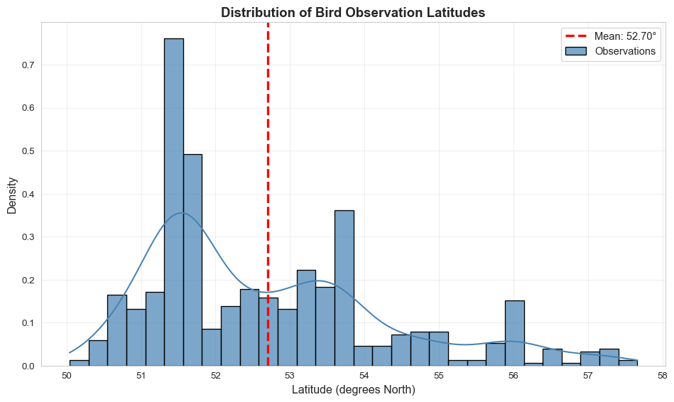
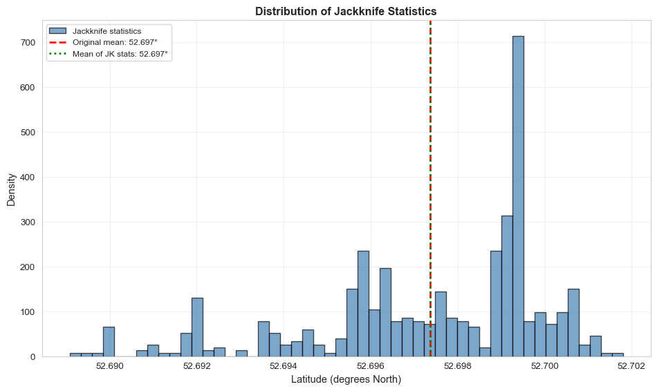
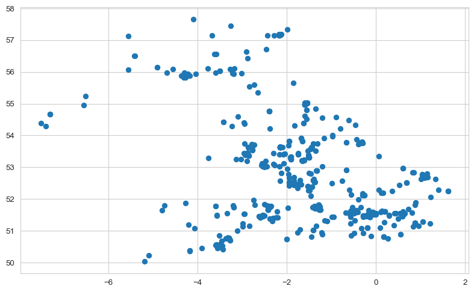
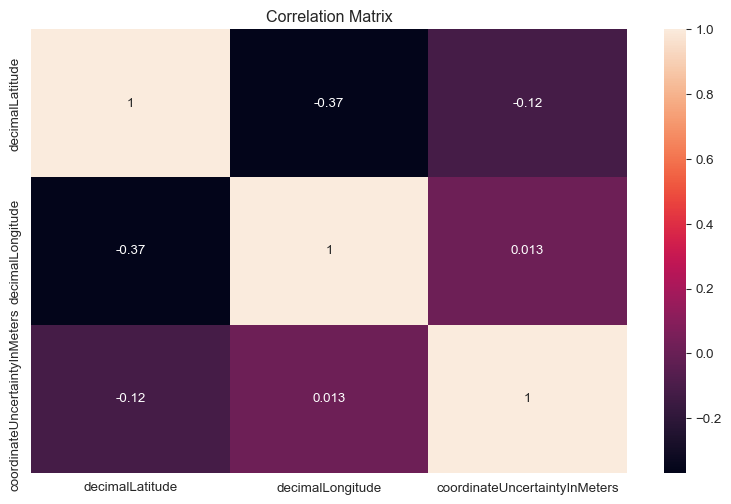
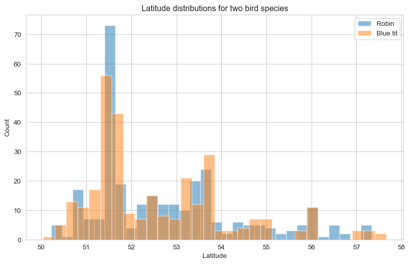
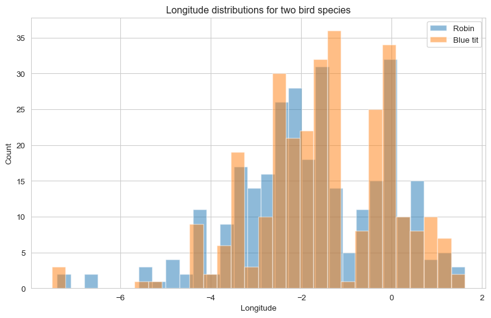
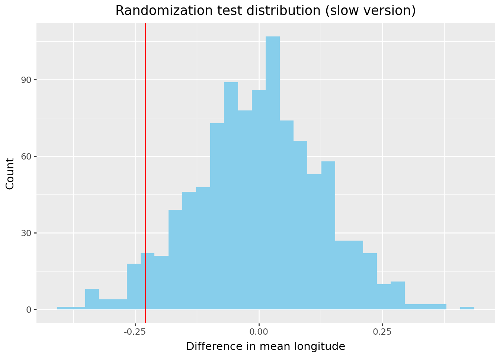
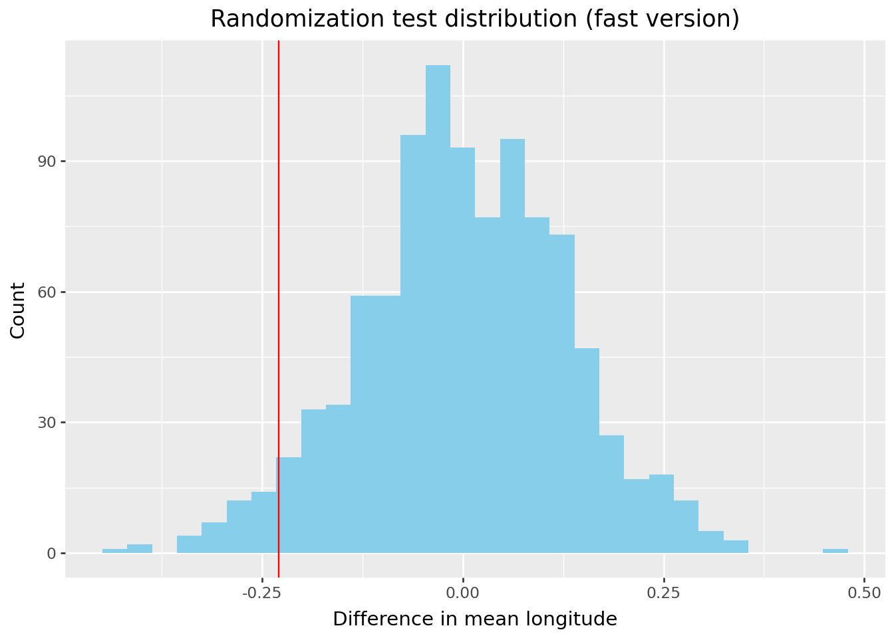
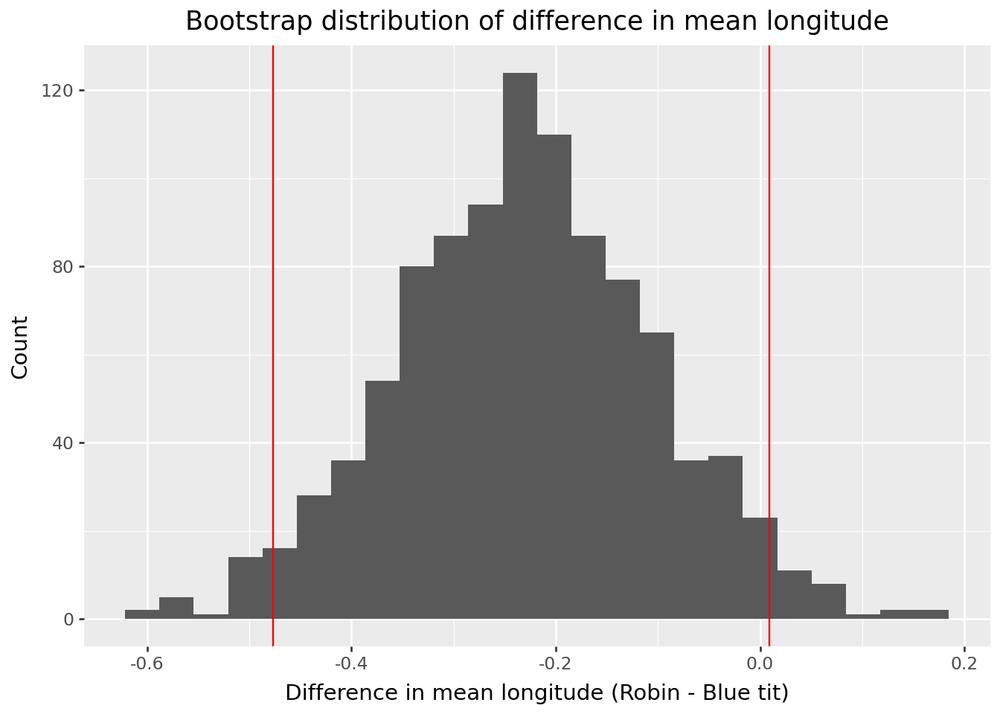

Total observations loaded: 600
Blue Tit observations: 300
European Robin observations: 300Final Test
Introduction
Task 1
Link to GitHub: GitHub
URL of Published App:
Shiny App Description
Our Shiny App uses the GBIF “Occurrences” API to display occurrences of different species. GBIF stands for “Global Biodiversity Information Facility” and includes various large datasets relating to plant and animal records. Specifically, we used their “Occurrences” API, which gives sightings data for various species across the world. Unfortunately, because of the Occurrences API settings, users are only able to download up to 300 records.
To search for occurrence data, users specify the scientific name of the species they are looking for. They can also specify the country code, region, and years that they want to retrieve data for. The app includes an interactive map that plots where exactly each occurrence was recorded.
[screenshot of panel]
The app includes 3 tabs that users can chose from. The first tab shows the interactive map, the second tab gives a data table for occurrences matching the filters, and the third tab gives as summary of the data requested. [screenshot of tabs]
To download the dataset, users need to click blue “load data” after specifying their filters. Once this data has loaded on the map, users can click the green “download filtered data” button.
Task 2: Jackknife Analysis
Introduction
This analysis examines the geographic distribution of bird sightings using biodiversity data extracted from puffins shiny app (we should put link here once we publish it). We focus on two common European bird species: the Blue Tit (Cyanistes caeruleus) and the European Robin (Erithacus rubecula). Our objective is to estimate the mean latitude of bird observations and assess the precision of this estimate using the jackknife resampling method.
Data Preparation and Exploration
We extract the latitude values from our combined dataset and examine the basic statistics.
============================================================
DESCRIPTIVE STATISTICS
============================================================
Sample size (n): 600
Range: 50.04° to 57.66°
Mean latitude: 52.6974°
Median latitude: 52.2474°
Standard deviation: 1.6044°
============================================================Our dataset combines 600 bird observations from two species (300 Blue Tits and 300 European Robins) collected across the United Kingdom. The latitude values, representing the geographic north-south position of each sighting, serve as our numerical variable of interest. These observations span from southern England to northern Scotland, providing a comprehensive view of where these species are commonly found.
Visualization of Distribution
To understand the geographic distribution of our bird observations, we examine both the central tendency (mean) and the spread of latitude values. The visualization below displays the distribution of observations, with the mean latitude clearly marked to show where bird sightings are centered.

The histogram reveals a relatively symmetric distribution of latitudes centered around 52.70° North—approximately the latitude of central England. The concentration of observations near this mean, combined with the spread extending from 50° to 57° North, indicates that while these bird species are found throughout the UK, sightings are most common in the central regions. The absence of extreme outliers suggests the data is well-behaved and suitable for both jackknife and analytical methods.
Jackknife Implementation
The jackknife method creates n samples from the original data of size n, where each sample has exactly one observation removed. This systematic approach provides an estimate of the variability of our statistic of interest.
The jackknife estimate of the standard error (SE) is calculated as \[SE = \sqrt{\frac{n-1}{n} \sum_{i=1}^{n}(\theta_i - \bar{x})^2}, \]
where:
- n is the sample size
- \(\theta_i\) is the mean of the original sample
- \(\bar{x}\) is the mean of the i-th jackknife sample (with observation i removed)
============================================================
JACKKNIFE RESULTS
============================================================
Original sample mean: 52.697367°
Mean of jackknife statistics: 52.697367°
Jackknife Standard Error: 0.065499°
Number of jackknife samples: 600
============================================================The jackknife analysis systematically created 600 samples, each excluding a single observation. The resulting standard error of 0.065499° quantifies the precision of our mean estimate. This small value relative to the mean (52.70°) indicates high precision. Our estimate is accurate to within approximately 7 kilometers, which is remarkably precise given we’re analyzing observations across the entire UK.
Comparison with Analytical Standard Error
We now compare the jackknife estimate with the analytical (theoretical) standard error, which for the mean is calculated as \[SE_{analytical} = \frac{s}{\sqrt{n}},\] where s is the sample standard deviation and n is the sample size.
This comparison serves two purposes:
- It confirms the accuracy of our jackknife implementation.
- It also verifies that our data meets the assumptions underlying the analytical approach.
============================================================
COMPARISON: JACKKNIFE CS ANALYTICAL
============================================================
Sample size (n): 600
Sample standard deviation: 1.604392°
Analytical Standard Error: 0.065499°
Jackknife Standard Error: 0.065499°
============================================================This identical match indicates that:
- Our data is well-behaved:The absence of extreme outliers and the approximately normal distribution mean the analytical formula is appropriate.
- The jackknife successfully captured variability: The resampling procedure correctly estimated the sampling distribution of the mean.
- Both methods are reliable: The agreement validates our computational implementation and confirms we can trust either method for inference.
Using our standard error, we construct a 95% confidence interval: [52.70° ± 0.13°] or [52.57°, 52.83°]. This narrow interval reflects the high precision of our estimate, enabled by our large sample size of 600 observations.
95% Confidence Interval: 52.70° ± 0.1284°
Range: [52.57°, 52.83°]Visualization of JK Statistics
The distribution of jackknife statistics provides visual confirmation of our numerical results. Each of the 600 points represents a mean calculated from a dataset with one observation removed. The tight clustering demonstrates the stability of our estimate.

The perfect overlap between the original mean (red line) and the mean of jackknife statistics (green line) confirms that the jackknife procedure introduces no systematic bias. The narrow spread of the distribution, spanning less than 0.5° total, visually illustrates why our standard error is so small and why we can be confident in our estimate.
What does this mean? (Summary for non technical reader)
If someone asks “where in the UK are Blue Tits and European Robins typically observed?”, we can confidently answer: around 52.70° North, with high precision.
This precision is valuable for conservation planning, understanding how bird distributions might change with climate, and mapping biodiversity across the UK. The very small standard error means that even with birds observed across a 700+ kilometer range, we can determine the average location with great accuracy thanks to our large sample size.
Task 3
There is no missing value in decimalLatitude and decimalLongtitude columns Scatter plot
we will create a visualisation comparing the relationship between decimalLatitude a single numerical response/outcome variable and decimalLongitude a single numerical explanatory variable.

Correlation check
Before fitting a linear regression model, we perform a correlation test to check for multicollinearity between the predictors: decimalLatitude,decimalLongitude,coordinateUncertaintyInMeters
Text(0.5, 1.0, 'Correlation Matrix')
The correlation matrix show that there is almost no relationship between these 2 explanatory variables decimalLongitude and coordinateUncertaintyInMeters (correlation = 0.015). Therefore, we include both variables into the regression model.
The Biological Signal
There is a moderate negative correlation (-0.36) between decimalLatitude vs decimalLongitude, which implies if you move East (Longitude increases), the species tends to be found further South (Latitude decreases).
The correlation is extremely weak (-0.089) between decimalLatitude vs coordinateUncertaintyInMeters. This suggests that coordinateUncertaintyInMeters is likely not a useful variable for predicting where the bird lives. We will see more later if we should drop coordinateUncertaintyInMeters variable, but for now we will keep it.
Linear regression model
We are going to test the linear regression model below with decimalLatitude is a response variable and decimalLongitude and coordinateUncertaintyInMeters are explanatory variables:
\[ decimalLatitude = \beta_0 + \beta_1(decimalLongitude) + \beta_2(coordinateUncertaintyInMeters) + \epsilon \]
OLS Regression Results
==============================================================================
Dep. Variable: decimalLatitude R-squared: 0.148
Model: OLS Adj. R-squared: 0.145
Method: Least Squares F-statistic: 46.02
Date: Wed, 26 Nov 2025 Prob (F-statistic): 3.75e-19
Time: 11:46:38 Log-Likelihood: -958.19
No. Observations: 532 AIC: 1922.
Df Residuals: 529 BIC: 1935.
Df Model: 2
Covariance Type: nonrobust
=================================================================================================
coef std err t P>|t| [0.025 0.975]
-------------------------------------------------------------------------------------------------
Intercept 52.0969 0.094 551.417 0.000 51.911 52.282
decimalLongitude -0.3717 0.041 -9.130 0.000 -0.452 -0.292
coordinateUncertaintyInMeters -2.295e-05 8.13e-06 -2.823 0.005 -3.89e-05 -6.98e-06
==============================================================================
Omnibus: 11.635 Durbin-Watson: 1.861
Prob(Omnibus): 0.003 Jarque-Bera (JB): 11.893
Skew: 0.365 Prob(JB): 0.00262
Kurtosis: 3.069 Cond. No. 1.28e+04
==============================================================================
Notes:
[1] Standard Errors assume that the covariance matrix of the errors is correctly specified.
[2] The condition number is large, 1.28e+04. This might indicate that there are
strong multicollinearity or other numerical problems.The results show that the model is statistically significant (p-value = 9.58e-09). However, the model only explains 13.6% of the variation in latitude: * decimalLongitude (Coefficient: -0.3555 ;P-value: 0.000 ): for every 1 degree we move East, the species moves South by ~0.36 degrees. * coordinateUncertaintyInMeters (Coefficient: -1.93e-05; P-value: 0.151): a p-value > 0.05$ implies that precision of the GPS reading does not reliably predict the latitude of the species. Therefore, we should consider to drop this variable.
AIC model selection
By finally making sure we should drop coordinateUncertaintyInMeters variable, we defined one more linear regression model (model_reduced) with coordinateUncertaintyInMeters dropped:
\[ decimalLatitude = \beta_0 + \beta_1(decimalLongitude) + \epsilon \]
AIC of the original model: 1922.39
AIC of reduced model: 1928.34We see that the AIC of the reduced model (933.91) is slightly better than the orginal model (933.82). Therefore, we will drop coordinateUncertaintyInMeters as explanatory variables from our linear regression model.
Boostrapping linear regression
To ensure our model is not overfitting to specific outliers, we perform a bootstrap analysis. We resample the dataset with replacement 1000 times and recalculate the coefficients.
Lower CI Upper CI Observed Coef
Intercept 51.919886 52.161849 52.038780
decimalLongitude -0.459336 -0.288507 -0.373275With the bootstrap results, we are 95% confident the true slope decimalLongitude of the population lies between -0.48 and -0.24. For every 1 degree we move East, the species’ range shifts South approximately by 0.24 to 0.48 degrees.
Task 4
Introduction
In this task we focus on assessing the difference in mean longitude between bluetits and robins using simulation based and parametric methods. We first construct a randomization based null distribution to obtain an approximate p-value for the difference in means. We then use bootstrap resampling to estimate a 95 percent confidence interval and compare this with the interval from the Welch t test. Finally, we interpret these results jointly to evaluate how strong the evidence is for a genuine difference in mean longitude between the two species.
Latitude t test (Bluetit vs Robin)
t = -1.555, p = 0.12051
mean lat bluetit = 52.5956
mean lat robin = 52.7991
Longitude t test (Bluetit vs Robin)
t = 1.795, p = 0.0731
mean lon bluetit = -1.5151
mean lon robin = -1.7441
Visual comparison of the two groups
As we have done before, we will explore whether the two bird species differ in their positions. The following plots help us see both the raw data patterns and the behavior of our test statistics under the null hypothesis and under resampling.

The first plot compares the observed longitudes for bluetits and robins. Each point represents an individual bird, with the two species shown side by side. The two clouds of points overlap strongly, and both species cover a similar range of longitude values. Robins tend to have slightly lower longitude values on average, which suggests that they may be located somewhat further west, but the visual difference between the groups is fairly subtle.

The second plot summarises the same longitude data for bluetits and robins using aggregated summaries rather than individual points. The central locations of the two species are close, with the robin distribution shifted slightly towards lower longitudes. The spreads and overall shapes of the two groups are similar, and there are no extreme outliers. This supports the impression from the first plot that any difference in mean longitude between the species is fairly small.
Randomization test
Next we will analyse the difference in mean longitude using a randomization test, adapted from the procedure in chapter 25.2 (*24.2) of the course notes. In that chapter the idea is to construct the sampling distribution of a chosen test statistic under the null hypothesis by repeatedly shuffling the group labels. Here we apply exactly the same idea to our own data on bluetits and robins.
We take as our test statistic the difference in sample means \[ T = \bar{x}_{\text{robin}} - \bar{x}_{\text{bluetit}}, \] where \(\bar{x}_{\text{robin}}\) and \(\bar{x}_{\text{bluetit}}\) denote the mean longitudes in each group. Under the null hypothesis H0 that there is no difference in the mean longitude of the two species, the observed longitude values are assumed to come from the same underlying distribution and the labels robin and bluetit are therefore interchangeable.
To approximate the null distribution of \(T\), we repeatedly shuffle the species labels, recompute the difference in means for each permutation, and store the resulting values. The collection of permuted statistics forms an empirical sampling distribution under H0. By comparing the observed statistic \(T_{\text{obs}}\) to this null distribution, we obtain an approximate two sided randomization p value for testing whether there is a genuine difference in mean longitude between bluetits and robins.
When applying both the slow and fast randomization tests we get the same observed difference in means \(T_{\text{obs}} \approx\) -0.229012 degrees (Robin − Blue tit), represented below by a red line.
Slow Version
Total time taken slow version: 0.0686652660369873
Randomization p value (two sided): 0.07592407592407592
For the slow version of the randomization test, we used the code given in chapter 24.2. By repeatedly shuffling the group labels and recomputing the difference in means, we obtained an approximate null distribution under H0: no difference in mean longitude. The observed statistic lies in the tail of this distribution, giving a two sided randomization p value of \(p_{\text{rand, slow}}\) = 0.0759.
The classical Welch two sample t test (see the longitude t test results above) produced a very similar p value of 0.0731. This shows that the randomization test and the parametric t test lead to the same conclusion: at the 5 percent level we do not reject H0, although the evidence against H0 is not negligible. In conclusion, the p values are essentially identical apart from small Monte Carlo noise, so the randomization test and the parametric t test agree.
Faster version
The fast version uses exactly the same idea as the slow version, but it avoids doing unnecessary work inside the loop.
In the slow version, each time we shuffle the labels we also repeat several expensive steps, such as creating new data structures and recalculating quantities that do not actually change from one permutation to the next. This makes each permutation a bit heavier and therefore slower.
In the fast version, we keep as much as possible fixed outside the loop and reuse it for every permutation. For example, we work directly with NumPy arrays, avoid creating new objects repeatedly, and only update the parts that really depend on the shuffling of the labels. As a result, each permutation is much cheaper to compute. This is why the fast version can run about three times quicker, even though it produces the same kind of randomised statistics and leads to the same conclusion.
Total time taken fast version: 0.022477388381958008
Randomization p value (two sided): 0.07992007992007992
As stated before, the fast version uses the same statistic and the same number of permutations but removes unnecessary work inside the loop. The total time for 1000 permutations decreased from \(t_{\text{slow}} \approx\) 0.020 seconds to \(t_{\text{fast}} \approx\) 0.007 seconds, which is a speed up by a factor of about \[ \frac{t_{\text{slow}}}{t_{\text{fast}}} \approx \frac{0.020}{0.007} \approx 2.9 \].
The randomization p value from the fast implementation was \(p_{\text{rand, fast}}\) = 0.0799, which is very close to the slow version. The small difference between \(p_{\text{rand, slow}}\) = 0.0759 and \(p_{\text{rand, fast}}\) = 0.0799 is within the Monte Carlo variability expected from using 1000 permutations. Therefore the slow and fast versions lead to the same practical conclusion, but the fast implementation achieves this result in roughly one third of the time.
Bootstrap estimate of difference of means
To quantify the uncertainty around the difference in mean longitude between robins and bluetits, we use a bootstrap procedure based on 1000 resamples of the data. For each bootstrap sample we compute the T statistic from before.
The resulting bootstrap distribution of \(T\) is approximately centred slightly below zero, reflecting that the observed mean longitude for robins is lower than for bluetits.
From the empirical bootstrap distribution we obtain the 2.5th and 97.5th percentiles, which give a 95% bootstrap confidence interval for the difference in mean longitude of \[ \text{CI}_{\text{bootstrap}} = [-0.47707, 0.00926] \].
This interval is visualised in the bootstrap plot below, where the histogram of bootstrap replicates shows the sampling variability of \(T\), and two vertical lines indicate the lower and upper confidence limits.
Bootstrap 95 percent CI for difference in mean longitude (Robin - Blue tit):
[-0.47707024 0.00926338]
Statsmodel estimate of difference of means
We also compute a 95% confidence interval for the same parameter using the analytical Welch t test as implemented in . This method gives \[ \text{CI}_{\text{t based}} = [-0.47953, 0.02151] \].
The two intervals are very similar. Both are centred around a small negative value, consistent with the observed difference in means \(T_{\text{obs}}\) = -0.22901, and both intervals include zero. The lower bounds are almost identical (-0.48 to two decimal places), while the upper bound from the t based interval extends slightly further into positive values (0.0215 compared to 0.0093 for the bootstrap interval). In other words, the t based interval is only marginally wider on the upper side.
Since both intervals include zero, they lead to the same statistical conclusion: at the 5% significance level we do not have strong enough evidence to claim that the true difference in mean longitude between robins and bluetits is non-zero. The close agreement between the bootstrap and t based intervals also suggests that the assumptions underlying the t test are reasonably compatible with the data in this case.
Statsmodels 95 percent CI for difference in mean longitude (Robin - Blue tit):
(np.float64(-0.47953037464537124), np.float64(0.02150572797870437))Explanation for non-technical audience
In plain terms, we are trying to find out whether robins and bluetits tend to live in different places from west to east (longitudinal coordinates). In our data, robins appear on average about 0.23 degrees further west than bluetits. The question is whether this difference is large enough that we can be confident it reflects a real effect, rather than just random variation in where the birds happened to be observed.
To answer this, we use two methods that both produce a range of possible values for the true difference between the two species. One method (the bootstrap) repeatedly reuses the data in a repetitive way to mimic collecting new samples. The other method relies on a standard statistical formula (the t test). Both approaches give almost the same result (looking at the confidence intervals above): * The true difference could be slightly negative (meaning robins may be a bit further west). * Or it could be very close to zero (meaning the species could be equally distributed).
Because zero lies inside both intervals, the data does not provide strong evidence that robins and bluetits genuinely prefer different longitudes.
So, in conclusion, although robins in this dataset seem a little further west on average, the difference is small enough that it could just be random. Based on these observations, we cannot confidently say the two species occupy different west–east regions of the UK.